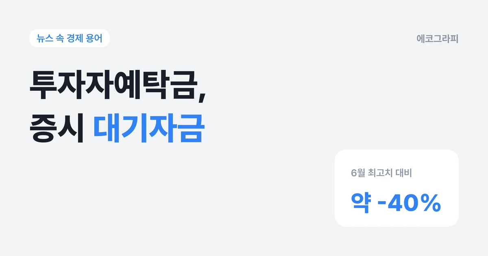
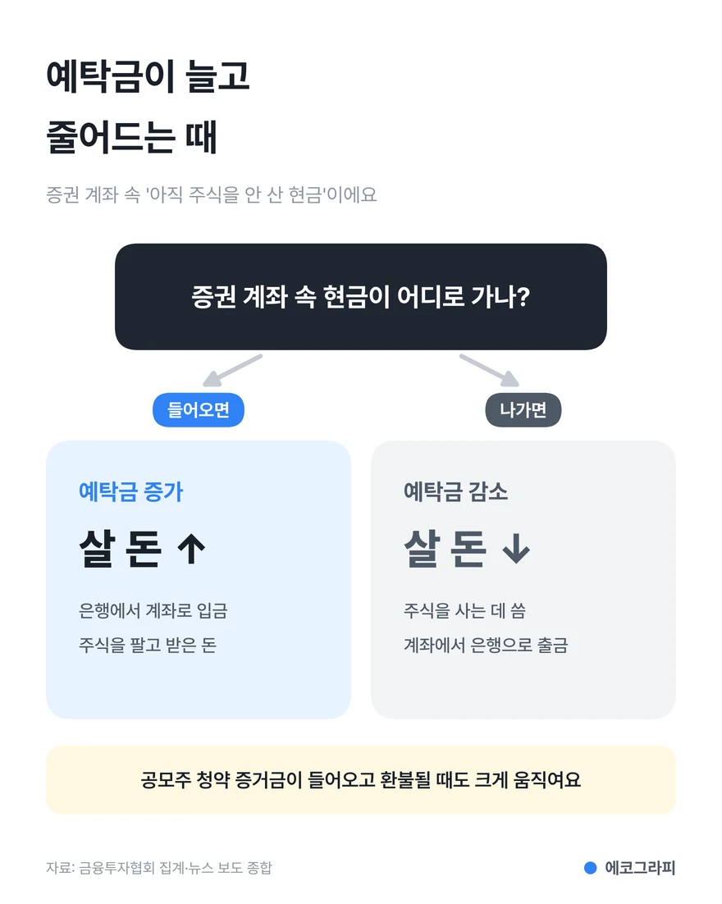
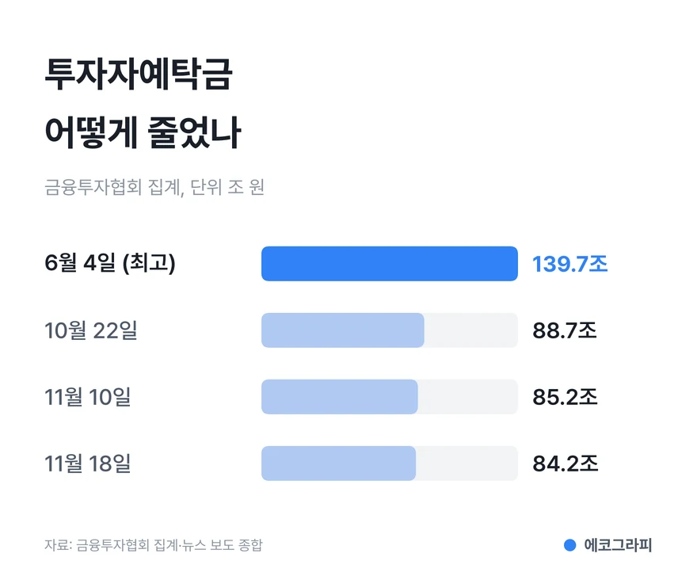
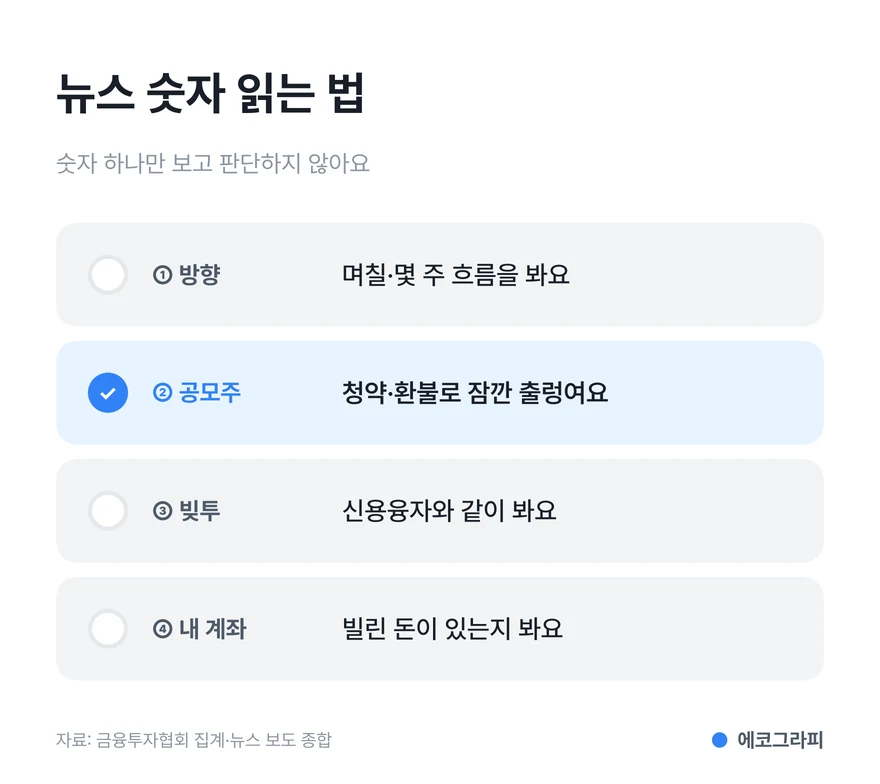
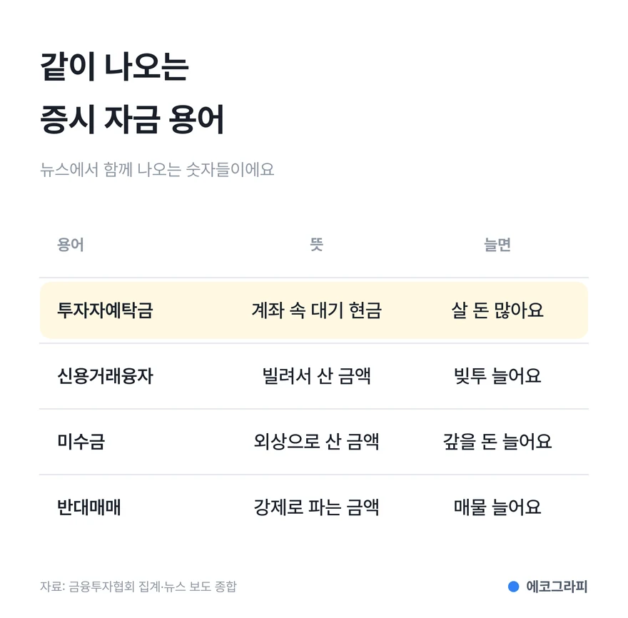

이번 주 증시 기사에는 "증시 대기자금 연중 최저"라는 말이 자주 나왔어요. 금융투자협회 집계로 11월 18일 투자자예탁금은 84조 1,848억 원이었어요. 하루 만에 2조 4,379억 원 줄었고, 앞서 연중 최저였던 10일(85조 2,208억 원)보다도 낮아졌어요. 19일엔 81조 5,669억 원까지 줄었다는 보도도 나왔어요. 코스피가 한 주에 8% 가까이 빠진 이번 주 흐름은 오늘 아침 주간 시황에 정리했어요.
투자자예탁금: 투자자가 주식을 사려고 증권 계좌에 넣어 두었거나, 주식을 팔고 받은 돈 중 아직 다른 주식을 사지 않은 현금이에요. 언제든 주식을 살 수 있는 돈이라 '증시 대기자금'이라고 불러요.
은행에서 증권 계좌로 돈을 옮기거나 주식을 팔면 예탁금이 늘어요. 반대로 주식을 사거나 증권 계좌에서 돈을 빼 은행으로 옮기면 줄어요.

그래서 예탁금이 크게 늘면 '주식을 살 준비가 된 돈이 많다', 크게 줄면 '시장을 떠나는 돈이 많다'고 해석하는 경우가 많아요.
예탁금은 올해 6월 4일 139조 6,947억 원으로 최고였어요. 이후 증시가 조정을 받으며 10월 21일엔 약 9개월 만에 90조 원 아래로 내려왔고, 10월 22일엔 88조 6,841억 원이었어요. 넉 달여 만에 약 51조 원이 줄어든 거예요.

재밌는 점은 중간에 한 번 크게 늘었다는 거예요. 11월 10~11일 하나에어로다이내믹스 공모주 청약 증거금이 환불되면서 12일엔 92조 원대로 잠깐 올라갔다가, 다시 줄었어요. 이렇게 공모주 청약과 환불만으로도 예탁금이 며칠 사이에 몇 조 원씩 오르내릴 수 있어요.

기억할 것: 투자자예탁금은 시장 전체의 '살 돈'이 얼마나 대기하고 있는지를 보여 주는 숫자예요. 하루 숫자보다 몇 주 흐름을, 그리고 신용융자·반대매매와 함께 보면 뉴스가 훨씬 잘 읽혀요.

신용거래융자는 증권사에서 돈을 빌려 주식을 산 금액이에요. 흔히 '빚투'라고 불러요. 11월 12일 기준 25조 7,729억 원으로, 10월 12일 최고치(34조 2,887억 원)보다 약 25% 줄었어요. 미수금은 주식을 산 뒤 이틀 안에 내야 할 돈을 아직 안 낸 금액이고, 이를 못 갚으면 증권사가 주식을 강제로 파는 반대매매가 일어나요.
네. 증권 계좌에 넣어 두고 아직 주식을 사지 않은 현금이면 투자자예탁금 통계에 포함돼요.
금융투자협회가 매일 집계해서 공개해요. 보통 하루~이틀 전 숫자가 기사로 나와요.
꼭 그렇지는 않아요. 사려는 돈이 줄었다는 참고 지표일 뿐이고, 주가는 실적·금리·환율 같은 다른 요인에도 크게 움직여요.
청약할 때 증거금을 계좌에 넣으면 예탁금이 늘고, 배정이 안 된 돈이 환불되면 다시 빠져나가요. 큰 공모주 청약이 있으면 며칠 사이 몇 조 원씩 움직일 수 있어요.
※ 2026년 11월 기준으로 정리한 글입니다. 세율·제도는 바뀔 수 있으니 거래 전 증권사·국세청 안내를 한 번 더 확인하세요. 특정 종목·상품의 매수·매도 권유가 아닙니다.